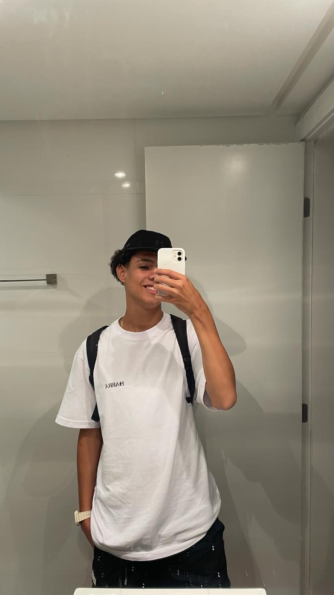

Olá, meu nome é João Pedro, tenho 18 anos e nasci em Vitória no Espírito Santo.

Como profissional, tenho pouquíssima experiência:
Tudo começou na empresa autoglass, como jovem aprendiz. Fui contratado para exercer serviços de suporte à infraestrutura. Prestava ajuda em campo para usuários com problemas em computadores, impressoras e smartphones.
Foi nessa empresa onde comecei a apresentar gostos pela área da tecnologia, e cada vez me interessando mais, foi aí que então decidi mudar a minha primeira opção de curso na faculdade e aqui estou: 1º período em ciência da computação. (quem diria que de veterinário eu viria para a área da tecnologia).
Sigo disposto a aprender e me dedicar ao máximo para me tornar um excelente e renomado profissional no mercado de trabalho.